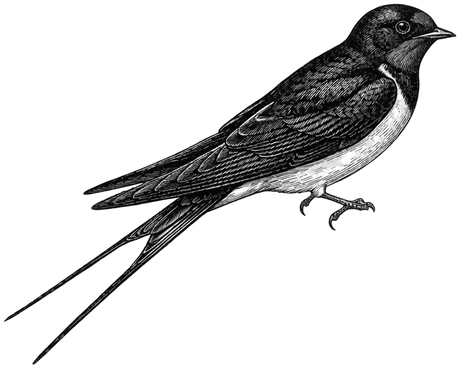

Brand Style Guide — Web · iOS · macOS · BRAND.md
Design principles
One accent colour. Generous whitespace. Nothing decorative that isn't doing work.
Georgia grounds the brand in long-form reading. Not a tech sans — a personal, considered voice.
The brand teal is rare and intentional — it marks structure and identity, not decoration.
Imagery (the swallow) runs desaturated. Colour lives in the brand, not photography.
Colour
Typography
Primary typeface: Georgia (serif) — fall back to Times New Roman, then generic serif.
Monospaced: Menlo — fall back to Courier New, then generic monospace.
No weight other than normal (400) and bold (700) are used. Display headings always normal weight.
Wordmark & identity
The wordmark is always the site name in Georgia at normal weight. Never bold, never all-caps, never altered.
Topbar strip
A thin teal strip inset by 1ex at the very top of every app surface. It is the lightest possible brand mark — a seam rather than a banner.
Spacing scale
Based on a 4px base unit. Use multiples of 4px for all padding, margin, and gap values.
UI patterns
Platform notes
#eee, cards #fff8px, inset 1ex1rem / 1.6#eee → systemGroupedBackground#fff → secondarySystemGroupedBackground#02aaa2NSColor.windowBackgroundColor#02aaa2 in Assets.xcassets.font(.custom("Georgia", ...))NSColor(calibratedRed:0.01 green:0.67 blue:0.64 alpha:1) for tealImagery

The barn swallow (Hirundo rustica) is the site mascot. Always rendered monochrome — never in full colour.
Any photography used alongside brand elements should be desaturated. Colour is reserved for the brand palette.
Imagery is given room to breathe. Avoid cropping tightly or layering images with heavy overlays.